5F
| Solenoid Valve Unit Removal and Installation |
Removal
1)Perform “Hydraulic Circuit Depressurization” function under “Utility” mode on SUZUKI scan tool referring Hydraulic Circuit Depressurization Procedure.
2)Disconnect negative (–) cable at battery.
3)Remove battery and battery tray. 
4)Drain transaxle oil.
5)Disconnect twin clutch system unit connector (1) as follows.
a)Release lock (2) of each connector by pulling it in arrow direction “1”.
b)After unlocking, release lock lever (1) by pulling it in arrow direction “2”.
6)Disconnect twin clutch system unit connector (3) in the same manner as Step 5).

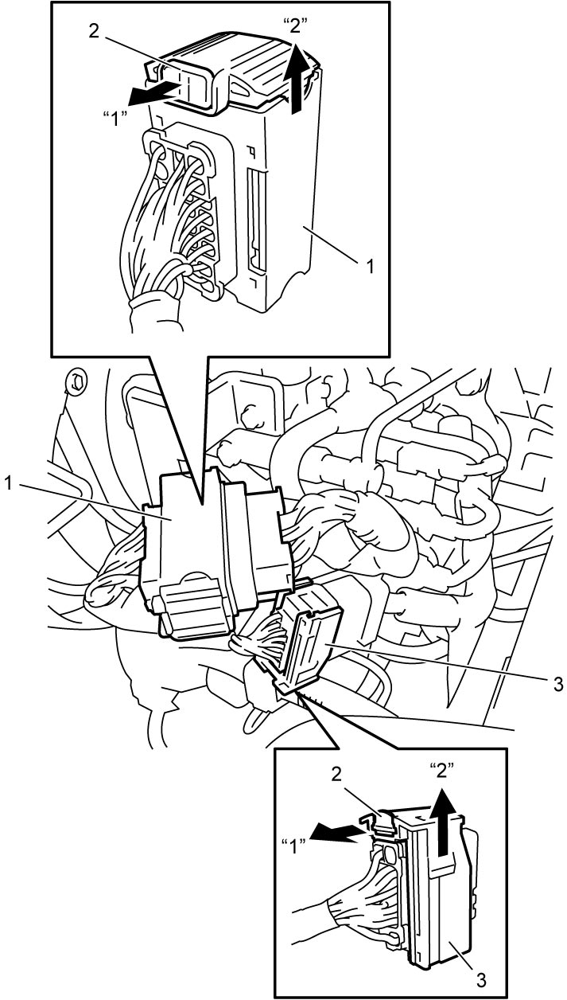
 "Expand image")
7)Remove twin clutch system unit connector bracket (1) by removing bolts (2).
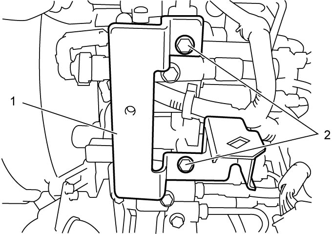
 "Expand image")
8)Hoist vehicle and remove engine undercover.
9)Disconnect solenoid valve connectors (1) from solenoid valve unit (2) as follows.
a)Draw matchmarks on the connectors.
b)Release lock (3) of each connector by pulling it in arrow direction “1”.
c)After unlocking, disconnect each connector by pushing it in arrow direction “2”.
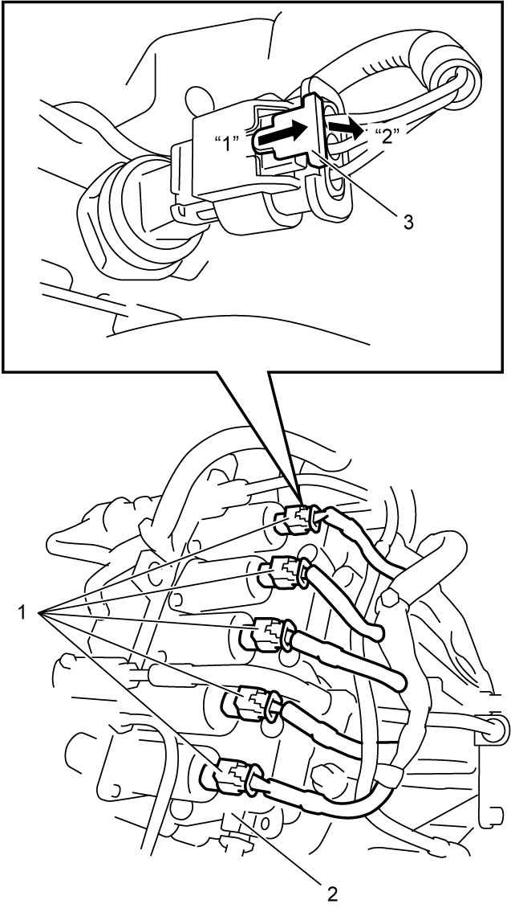
 "Expand image")
10)Disconnect odd gear clutch position sensor connector (1) in the same manner as Step 9).
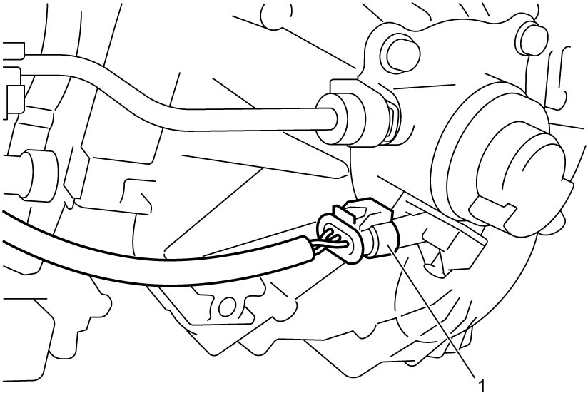
 "Expand image")
11)Disconnect gear select position sensor connector (1) and even gear clutch pressure sensor connector (2) in the same manner as Step 9).
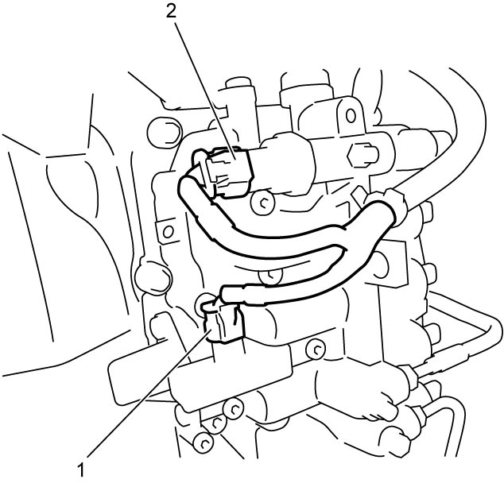
 "Expand image")
12)Disconnect line pressure sensor connector (1) in the same manner as Step 9), and disconnect sensor module connector (2) as follows.
a)Release lock (3) by pushing it in arrow direction “1”.
b)After unlocking, pull sensor module connector lever (4) in arrow direction “2”.
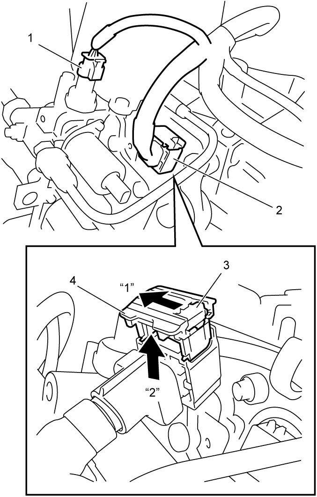
 "Expand image")
13)Remove clip (1) and then disconnect oil pipe (2) from odd gear clutch control actuator (3).
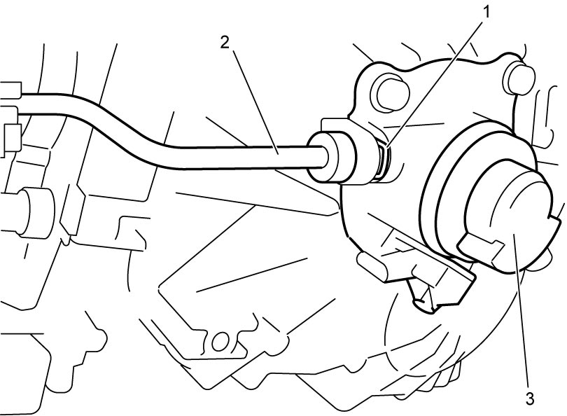
 "Expand image")
14)Remove clip (1) and then remove even gear clutch control actuator pipe (2).
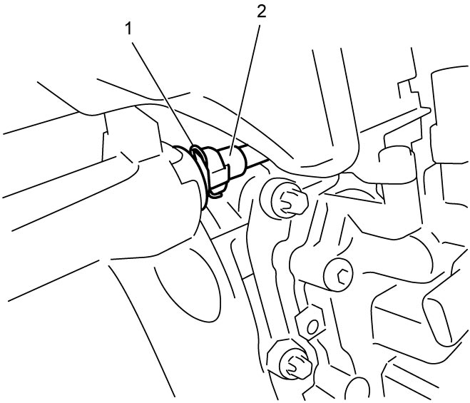
 "Expand image")
15)To avoid dripping oil and entering dust, connect the removed pipe ends (2) and retain them with clip (1), as shown.
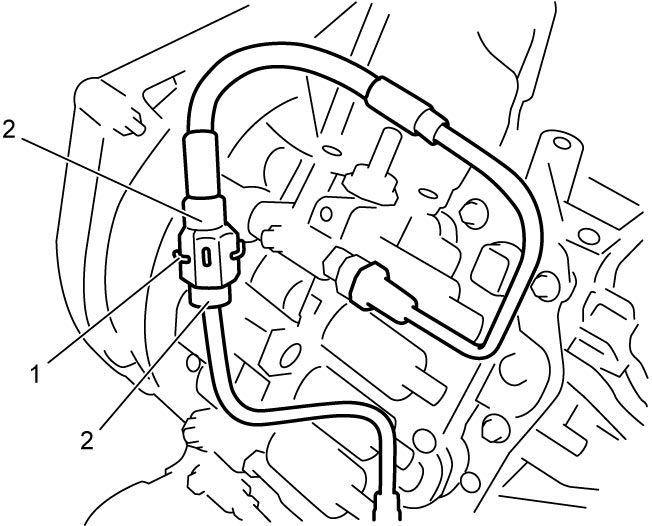
 "Expand image")
16)Remove twin clutch system actuation fluid reservoir.
17)Loosen accumulator band bolt.
18)Remove solenoid valve unit lower bolt (1).
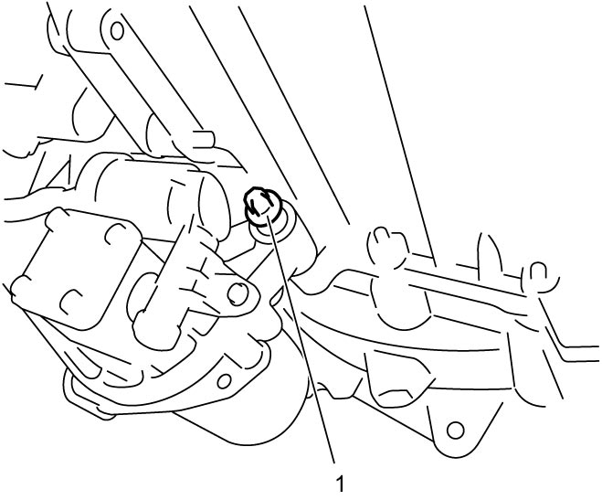
 "Expand image")
19)Remove solenoid valve unit bolts (1).
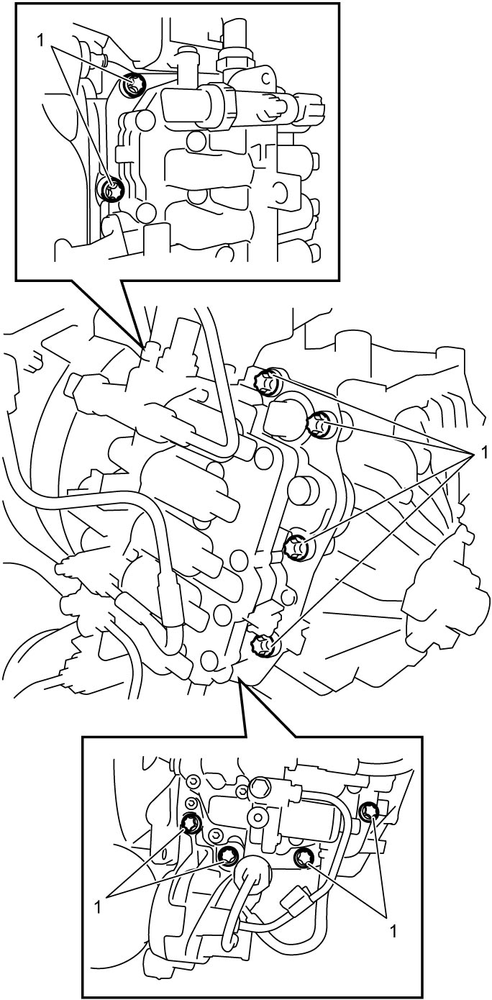
 "Expand image")
20)Using special tool and hammer or a large flat-bladed screwdriver (heavy duty type), separate solenoid valve unit (1) from transaxle case (2).
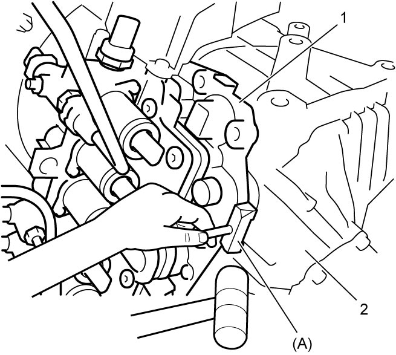
 "Expand image")
21)Remove dowel pin (1) if necessary.
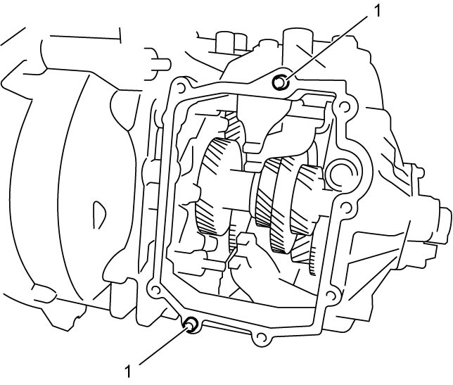
 "Expand image")
Installation
1)Install dowel pin (1) if removed.
2)Install solenoid valve unit (1) to transaxle case as follows.
a)Clean mating surfaces of solenoid valve unit and transaxle case.
b)Apply sealant to transaxle case (1) as shown in figure by such amount that its section is 1.5 mm (0.059 in.) in diameter.
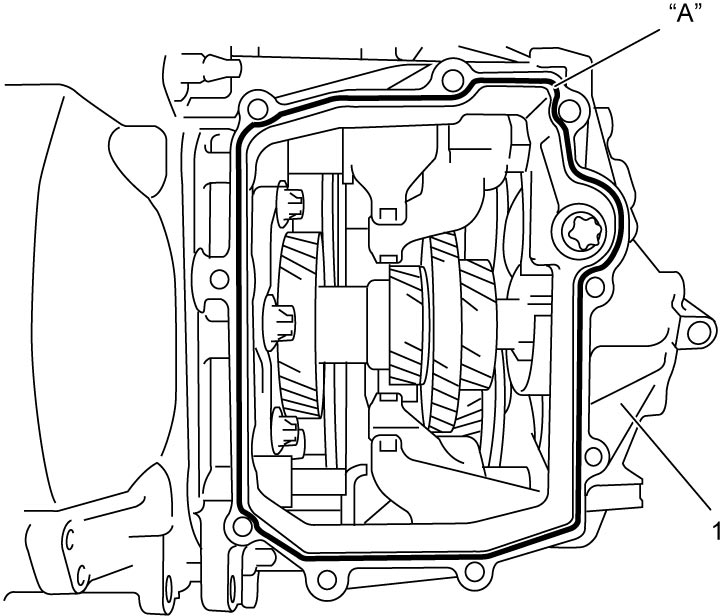
 "Expand image")
c)Within 2 minutes after applying sealant, mate solenoid valve unit with transaxle case.
 "Expand image")
3)Tighten solenoid valve unit lower bolt (1) to specified torque.
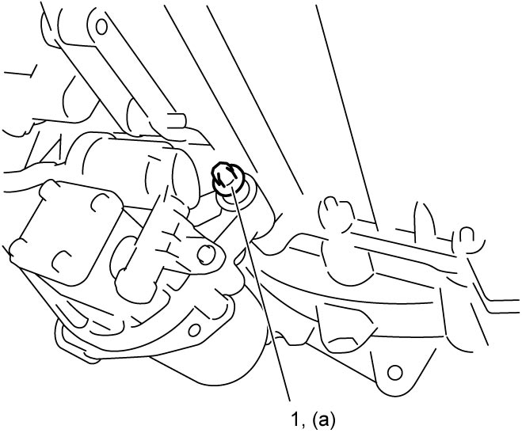
 "Expand image")
4)Tighten accumulator bolt securely.
5)Install twin clutch system actuation fluid reservoir.
6)Remove retaining clip (1) and disconnect pipes (2).
7)Connect even gear clutch control actuator pipe (1) and install clip (2).
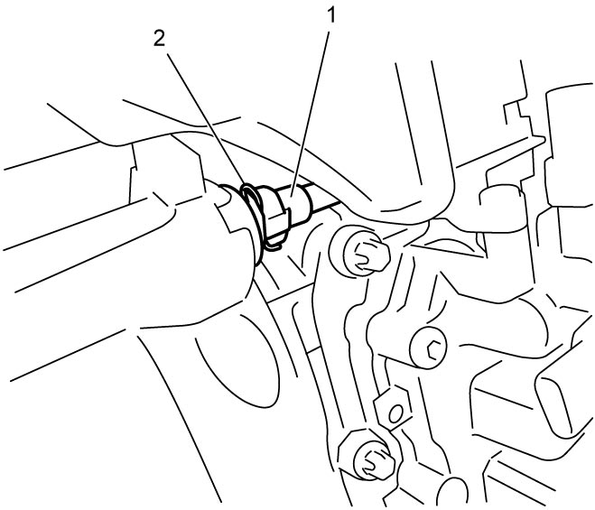
 "Expand image")
8)Connect oil pipe (1) to odd gear clutch control actuator (2) and install clip (3).
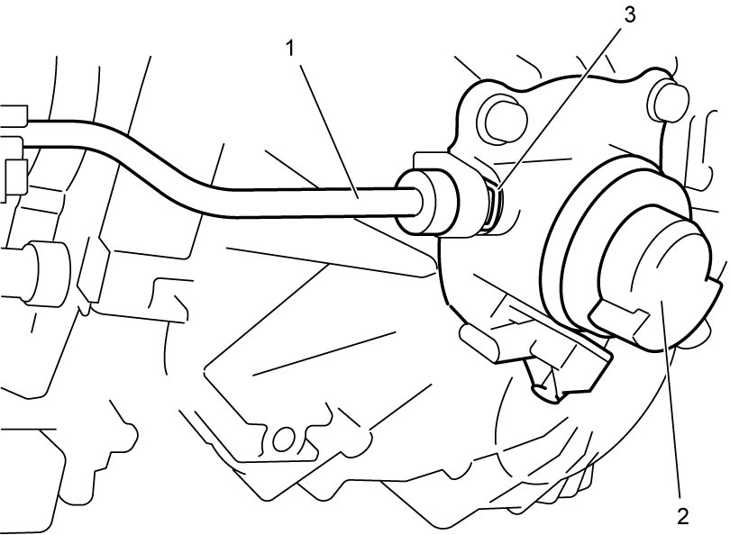
 "Expand image")
9)Connect removed connectors to original positions.
10)Install engine undercover.
11)Install twin clutch system connector bracket.
12)Install twin clutch system large connectors.
13)Install battery bracket and battery.
14)Connect negative (–) cable at battery.
15)After replacing solenoid valve unit, perform TCM and Clutch Initialization.